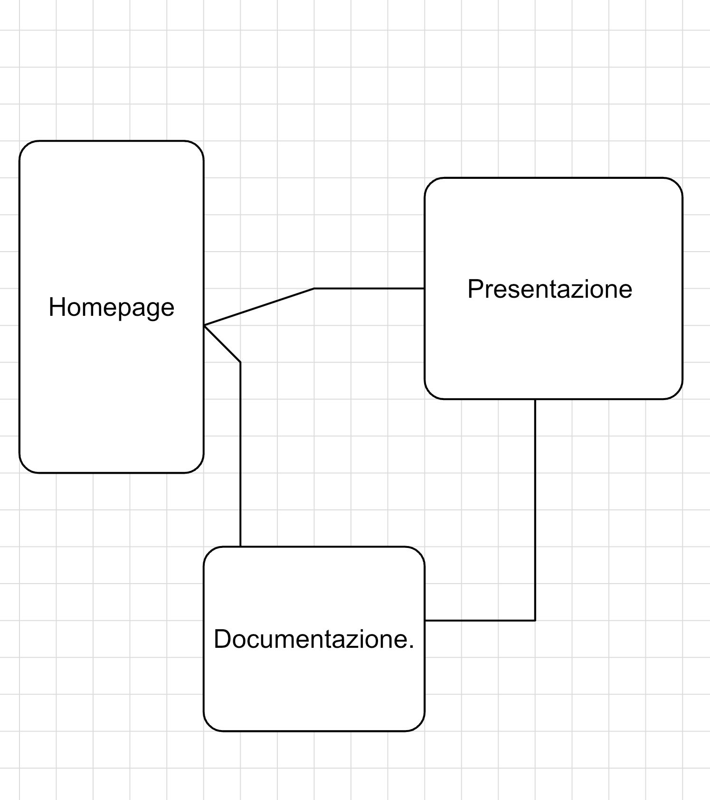
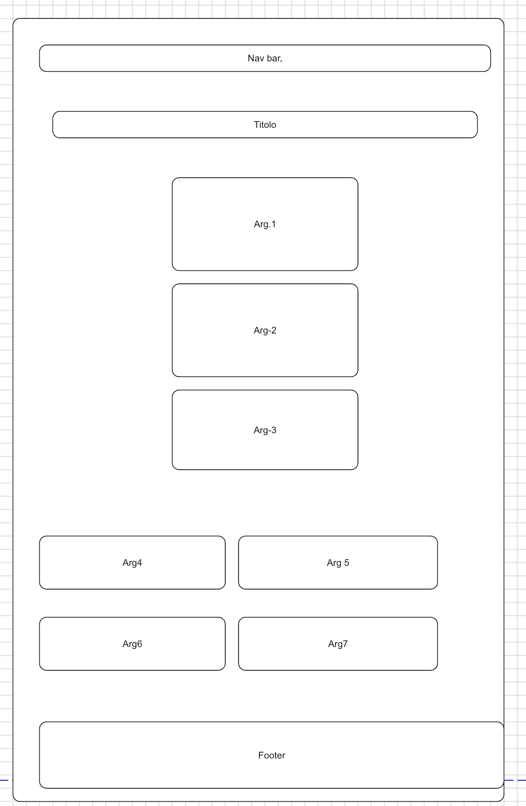
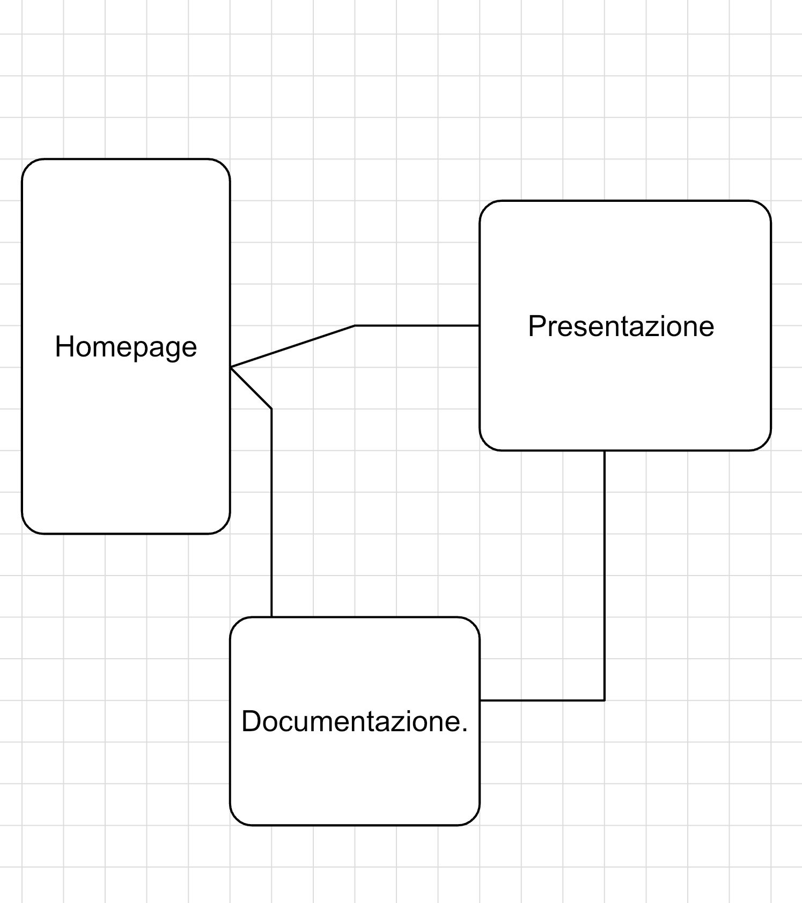
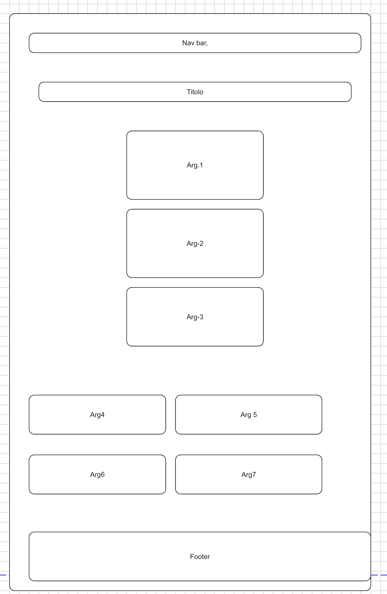
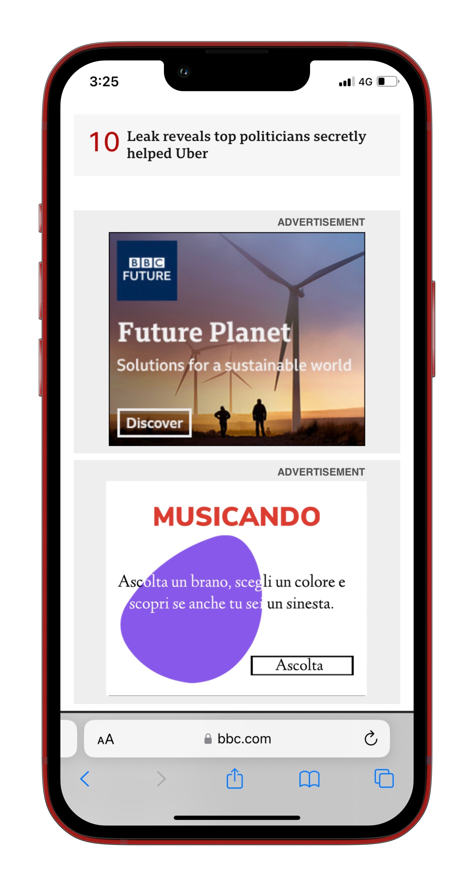
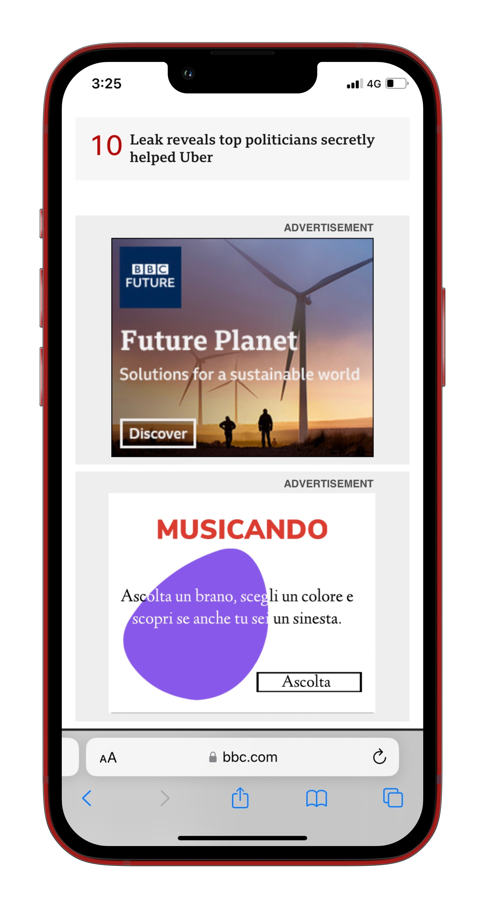

Documentazione
In questa sezione è possibile visualizzare tutta la documentazione relativa al sito web.
Benchmarking
OBIETTIVI
L'obiettivo principale che Musicando si pone è quello di trasmettere in maniera chiara e veloce quelle informazioni e peculirità che la musica e il mondo artistico (e non solo) hanno in comune. Uno dei punti di forza della musica è la sua versatilità, tutti noi siamo "vittime" della musica. Questo portale si rivolge a colore che vogliono approcciarsi in maniera diversa alla musica e ai suoni, con uno sguardo aggiuntivo sugli effetti di essa. Il target principle sono artisti e professionisti che cercano di soddisfare curiosità tra musica, suoni e il mondo artistico. La ricerca dei competitors è stata una fase interessante; non esiste ancora un portale che al suo interno contegna tante informazioni diverse riguardanti sempre musica e arte, Quello che il web mette a disposizione nella maggior parte dei casi sono articoli o piccoli blog. Di seguito una lista dei princpiali ipotetici "competitors".
Come è riusicta la musica a condizionare artisti e pittori e in che modo le onde cromatiche sono collegate alle onde sonore?
Musicando quindi pone l'attenzione su tutto quell'aspetto psicologico-cognitivo che la musica produce sia sull'arte che sull'essere umano.
TARGET UTENTE
COMPETITORS
The Conversation - Every song has a color – and an emotion – attached to it
Simbiosi Arte e Musica
Come la musica ha aiutato artisti come Matisse e Kandinsky a reinventare l’arte - Bnl.it
Arte e musica.
Architettura
LAYOUT e WIREFRME

LOOK & FEEL
Sia per la struttra del sito che per la scelta dei colori e dei font si è tenuto come obiettivo principale la chiarezza espostiva e la semplicità nel poter reperire informazioni.
La struttura del sito permette di potersi concentrare su un determinato argomento senza avere altre distrazioni nello schermo.
Inoltre con la tecnicha dei contenitori espansivi è possibile inserire una grossa quantità di testo senza andare a riempire troppo la pagina.
I font scelti per questo sito sono font lineari e alla lettura semplici:
- Nunito, Sans-Serif;
- Dm Sans, Sans-Serif.
I colori invece sono stati scelti appositamente per potersi fondere perfettamente l'un l'altro senza andare a danneggiare la lettura. Sfondi bianchi con testi neri e viceversa, background di contenitori dai colori opachi e leggeri producono una sensazione di fluidità e cromostesia ricercata anche da alcuni artisti citati negli articoli inerenti alla musica e all'arte.
COLORI e FORME:
- Colori: i colori utilizzati per la realizzazione di questo web site sono stati scelti su basi cromatiche leggere e soft, in grado di agevolare la lettura e la permanenza sulle pagine.
- Forme: i contenitori di testo e le forme utilizzate sono in grado di aumentare la fruibilità del contenuto presente dando la possibilità di focalizzarsi su pochi elementi di testo alla volta.
TOPIC:
1) Cromostesia: cos’è, come si comporta e cosa vuol dire essere sinesti.
2) Kandisnkji: alla scoperta del pittore dei suoni.
3) LaserLight: musica e luci in uno spettacolo mozzafiato.
4) Stephen E. Palmer: lo studio sull’associazione musica-colore.
5) Sovis Project: come le onde sonore possono dare vita a onde cromatiche diverse.
6) Paint with Music: l'innovativo software di Google che traduce in serie di note musicali i tuoi disegni.
7) Musicolor: due progetti innovativi, di cui uno Italiano.
LAYOUT e WIREFRME
LOOK & FEEL
Sia per la struttra del sito che per la scelta dei colori e dei font si è tenuto come obiettivo principale la chiarezza espostiva e la semplicità nel poter reperire informazioni. - Colori: i colori utilizzati per la realizzazione di questo web site sono stati scelti su basi cromatiche leggere e soft, in grado di agevolare la lettura e la permanenza sulle pagine. 1) Cromostesia: cos’è, come si comporta e cosa vuol dire essere sinesti.
La struttura del sito permette di potersi concentrare su un determinato argomento senza avere altre distrazioni nello schermo.
Inoltre con la tecnicha dei contenitori espansivi è possibile inserire una grossa quantità di testo senza andare a riempire troppo la pagina.
I font scelti per questo sito sono font lineari e alla lettura semplici:
- Nunito, Sans-Serif;
- Dm Sans, Sans-Serif.
I colori invece sono stati scelti appositamente per potersi fondere perfettamente l'un l'altro senza andare a danneggiare la lettura. Sfondi bianchi con testi neri e viceversa, background di contenitori dai colori opachi e leggeri producono una sensazione di fluidità e cromostesia ricercata anche da alcuni artisti citati negli articoli inerenti alla musica e all'arte.
COLORI e FORME:
- Forme: i contenitori di testo e le forme utilizzate sono in grado di aumentare la fruibilità del contenuto presente dando la possibilità di focalizzarsi su pochi elementi di testo alla volta.
TOPIC:
2) Kandisnkji: alla scoperta del pittore dei suoni.
3) LaserLight: musica e luci in uno spettacolo mozzafiato.
4) Stephen E. Palmer: lo studio sull’associazione musica-colore.
5) Sovis Project: come le onde sonore possono dare vita a onde cromatiche diverse.
6) Paint with Music: l'innovativo software di Google che traduce in serie di note musicali i tuoi disegni.
7) Musicolor: due progetti innovativi, di cui uno Italiano.
Linguaggi e strumenti
LINGUAGGI
I linguaggi utilizzati per la realizzazione di questo sito web sono: Tra i tools utilizzati troviamo:
- HTML;
- CSS;
- JAVASCRIPT.
STRUMENTI
- Sublime Text2;
- Codepen
- Html.it
- Grapholite
- GoodNotes
- Google Fonts
- Google Analytics
- Github
- Toolset.it
Project management
BACKGROUND
I 3 comptetiros presi in considerazione sono li stessi elencati prima nel punto 3-Benchmarking. L'approccio alla vita con un pensiero artistico e fluido permette di avere una visione del mondo ampia ed ssenziale. Musicando crede fortemente nell'impatto che la musica ha sulla quotidianità delle persone e crede inoltre che sia, insieme alle arti pittoriche, una forza capace di unire popoli lontani e diversi tra loro. Siamo tutti bersagli della musica e dei suoi effetti; questo sito è rivolto a coloro che voglio interfacciarsi tra la forte connessione che esiste tra musica e arte, persone giovani con uno sguardo rivolto verso il futuro, artisti e professionisti capaci di comprendere il forte legame tra la musica, i suoni e la nostra vita. "La prima grande sfida" La sfida che Musicando si è posta è quella di riuscire a creare uno spazio digitale dove sia possibile reperire in maniera semplice e fluida diversi tipi di informazioni riguardati uno stesso topic comune. La realizzazione di un web site in cui la percentuale di testo é altamente superiore alla percentuale di elementi visivi implica che la lettura e la ricerca siano messe sotto un grosso sforzo, e l’affaticamento visivo ne determina la qualità. Pertanto la grande sfida é stata la creazione di elementi visivi che alleggerissero il grosso sforzo causato da una preponderante quantità di testo. - Reperibilità: non essendo presente un “grande contenitore” di quelli che sono gli elementi di interessa tra musica e arte la ricerca si è svolta su svariate pagine web; inoltre la maggior parte degli studi scientifici sono in lingua originale, il che ha implicato un processo di traduzione e adattamento.
- The Conversation è una rivista accademica molto professionale che usa termini non sempre comuni e pone l'attenzione sulla sfera accademica;
- Bnl.it, sito bancario produce di tanto in tanto artiocli della piu svariata natura per mantere un alto tasso di sessioni attive. Il porblema sono gli argomenti fini a se tessi con poca possibilità di approfondimento;
- Music center gallery, troppo testo confusionario e poca chiarezza nell'esposizone dei contenuti.
OBBIETTIVI COMUNICATIVI
Aprire il mondo delle connessioni tra stimoli diversi, informare sugli studi che vengono fatti a riguardo e le varie innovazioni tecnologiche a riguardo soono gli obiettivi primari di Musicando e per realizzae questo piano il sito web è stato realizzato con uno schema semplice e compatto, poco dispersivo e tendendo conto di quelli che sono gli accorgimenti cormatici sul web.
TARGET e MESSAGGIO
RICERCA

Communication Strategy
PROMOZIONE
La sponsorizzazione del sito avverrà:
1) tramite condivisione sui social e nei gruppi social dell'url
2) inoltre verrà creata una pagina Instagram e un canale Telegram dove poter rimanere in contatto con gli utenti e i vistatori.
L’obiettivo di 20 nuovi follower è stato raggiunto. Per il raggiungimento di questo obiettivo la sponsorizzazione è avventa tramite condivisone del profilo Musicando tramite i canali social del creator.
3) Sposnorizzazione ipotetica, tramite Native banner e la tecnologia OutBrain su spazi pubblicitari collocati in piattaforme di contenuto similare, proponendo attività e letture all’interno del nostro sito. La valutazione complessiva dell'attività di promozione è basata su questi criteri:
 

VALUTAZIONE
- 100 visitatori sulla Home Page,
- 20 nuovi followers sul profilo Instagram.